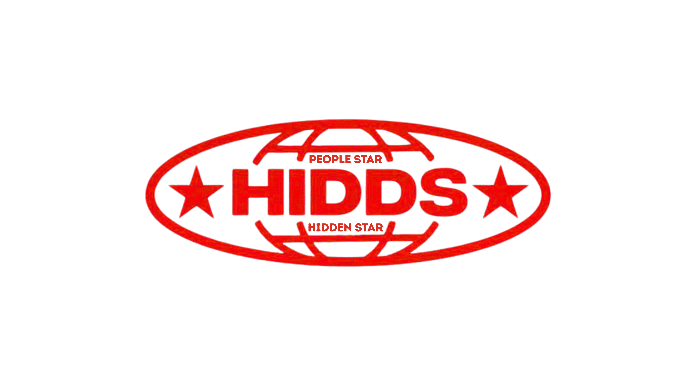

Perkenalkan, nama saya Jasman. Ini adalah homepage latihan saya untuk menyisipkan gambar. Karena masih belajar, tampilannya sangat sederhana.
Saya ingin melihat halaman selanjutnya[cite: 596].
Saya ingin langsung menuju ke bagian akhir halaman ini[cite: 596].
Kunjungi portal berita detik.com.
Silakan klik banner di bawah ini untuk menuju ke E-Learning UAD:
Kirim tugas ke email dosen: alitarmuji@uad.ac.id [cite: 652]
Tugas praktikum ini dikerjakan oleh Jasman, mahasiswa S1 Informatika UAD. Selain fokus pada materi HTML dasar, saya juga sedang antusias menyusun rancangan ERD untuk proyek marketplace Hidden Star yang dibangun menggunakan Laravel dan MySQL, di mana pelanggannya terhubung langsung ke produk.
Ini adalah bagian akhir halaman. [cite: 596]